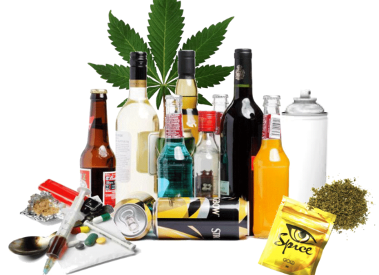
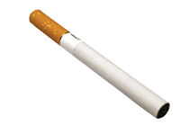
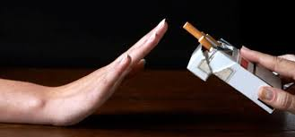

Zdrav nervni sistem i pravilno funkcionisanje od presudnog su značaja za psihofizičko zdravlje čovjeka. Osim bolesti i povreda, posebnu prijetnju za nervni sistem predstavljaju psihoaktivne supstance. To su supstance koje utiču na nervni sistem; neke imaju umirujuće dejstvo, druge su stimulativne ili mijenjaju stanje svijesti. U ovu grupu supstanci ubrajamo kafu, alkohol, cigarete, analgetike, sredstva za spavanje, marihuanu, opijate (heroin, opijum), kokain, doping sredstva i dr. Možemo reći da nema razlike između psihoaktivne supstance i droge. I u malim količinama, ove supstance štetno utiču na cijeli organizam. Mnoge od njih izazivaju zavisnost. Kada organizam ne može da funkcioniše bez određene psihoaktivne supstance, kažemo da postoji fizička zavisnost. Osobe koje ne mogu da se odupru neprestanoj potrebi da budu pod dejstvom psihoaktivnih supstanci, jer se samo tada osjećaju prijatno, psihički su zavisne.
|  | Psihoaktivne supstance-"začarani krug" iz koga se teško izlazi.  |
Osobe koje konzumiraju alkoholna pića često nijesu svjesne koliko alkohol štetno utiče na cijeli organizam. Psihoaktivni sastojak piva, vina i drugih alkoholnih pića je etil-alkohol (C2H5OH). Brzo se apsorbuje u sistemu za varenje, prelazi u krv i prenosi se do svih ćelija. U zavisnosti od koncentracije u krvi, alkohol izaziva različite promjene. Manje koncentracije djeluju relaksirajuće. Veće koncentracije alkohola usporavaju govor i rasuđivanje, remete sluh, vid, koordinaciju pokreta...Visoke koncentracije alkohola mogu da izazovu gubitak svijesti ili da blokiraju centar za disanje, što dovodi do smrti.
Alkoholizam je zavisnost od alkohola. Alkoholičari imaju brojne zdravstvene probleme: oštećenu sluzokožu organa za varenje, slab imunitet, oštećenu jetru, slabiji srce; imaju gubitke pamćenja, poremećaje u ponašanju i dr. Od alkoholizma boluju stotine miliona ljudi na svijetu. Šta misliš, zašto je alkoholizam teška bolest, ne samo za oboljelog, već i za porodicu i cijelo društvo?
Sve do polovine 20. vijeka smatralo se da je pušenje duvana bezopasno. Danas znamo da pušenje negativno utiče na nervni sistem i ostale organske sisteme. Cigarete sadrže brojne otrovne supstance: nikotin, katran, otrovne gasove- ugljen-monoksid (CO), cijanovodoničnu kisjelinu (HCN) i druge.
Pošto udahnete dim, nikotin prvo dospijeva u pluća, a potrebno je svega nekoliko sekundi da dođe i do mozga. Nikotin izaziva zavisnost; zbog toga je pušačima teško da prekinu da puše. Katran iz duvanskog dima taloži se u plućima, a ugljen-monoksid smanjuje količinu kiseonika u hemoglobinu, što dovodi do kratkog daha; zato se pušači brže zamaraju od nepušača.
Dugotrajno pušenje izaziva probleme sistema za cirkulaciju. Posebno je poremećena cirkulacija u usnoj duplji, desni postaju osjetljivije, bakterije se lakše razmnožavaju, što često dovodi do bržeg kvarenja zuba. Koža pušača brže stari i vremenom dobija sivkastu boju. Istraživanja su pokazala da pušenje višestruko povećava rizik od kancera.
Mnogi lijekovi pripadaju grupi psihoaktivnih supstanci. Šta se događa kada popijemo lijek protiv bolova? On djeluje na nervna vlakna koja prenose nervne impulse do centra za bol u mozgu, što dovodi do smanjenja ili prestanka bola. Korišćenje droga u medicini je korisno, ali se mora odvijati pod nadzorom ljekara.
Poznati stimulanti je kokain, koji se dobija iz listova biljke koke. U ovu grupu psihoaktivnih supstanci spada i kofein, kojeg ima u kafi, čaju, koka-koli, red bulu.
Teško je nabrojati sva dejstva marihuane, jer ne postoji organski sistem u našem tijelu na koji ona ne djeluje. Mijenja doživljavanje stvarnosti, remeti sluh, vid, izaziva napade smijeha ili straha i panike, ubrzava rad srca, može dovesti do problema sa disanjem... Dugotrajnim korišćenjem marihuane razvija se psihička zavisnost.
LSD je sintetska droga, koja izaziva snažne halucinacije i duševne poremećaje. Ova droga je opasna, jer ima nepredvidljive efekte; često izaziva osjećaj nepovredivosti, što može biti opasno za život.
Narkotici su droge koje otupljuju osjećanja i uklanjaju bol dejstvom na koru velikog mozga. Neki od njih, npr. morfijum, koriste se u medicinske svrhe. Heroin je jedan od najjačih narkotika; veoma brzo razvija zavisnost. Neposredno nakon unošenja izaziva osjećaj sreće i nadmoći, oslobađa od bola; prati ga crvenilo kože, proširene zenice, osjećaj toplote. Nakon toga narkoman zapada u stanje depresije, pospanosti, ima zamagljen vid, srce slabije radi, disanje je usporeno. Heroin je najopasniji ako se ubrizgava u venu.
|  | |
Među onima koji zloupotrebljavaju drogu najbrojniji su mladi ljudi, u uzrastu od 14 do 25 godina. Mladi ljudi postaju narkomani iz radoznalosti, iz želje da eksperimentišu, želje da dožive nešto novo, zbog uticaja drugih i potrebe za poistovjećivanjem. Najčešće ne znaju u kakvu zamku upadaju.
Narkomanija postaje vodeći društveni, ekonomski i zdravstveni problem. Širi se u gotovo svim zemljama na svijetu. Vjerovatno ćete se nekada naći pred iskušenjem: da li da probam, kao i moje društvo? Da li će mi se smijati ako odbijem? Moram li se odreći društva koje me nagovara da probam drogu? Probaću, samo jednom, od toga ništa ne bude... Da li makar na kratko zaboraviti porodične probleme? Postoji mnogo razloga da kažeš "ne" ovakvim iskušenjima. Ljudi koji probaju psihoaktivne supstance često postaju zavisni, i vremenom prestaju da biraju sredstva da dođu do njih. Zadovoljstvo i opuštenost kratko traju. Posljedice su teške.